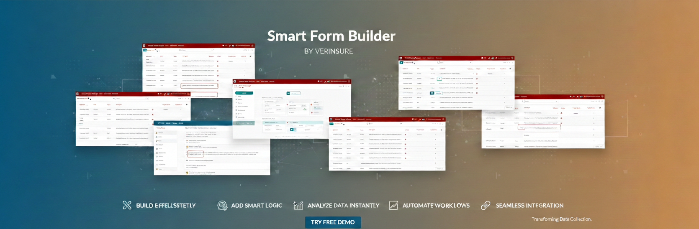
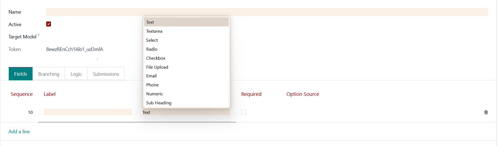
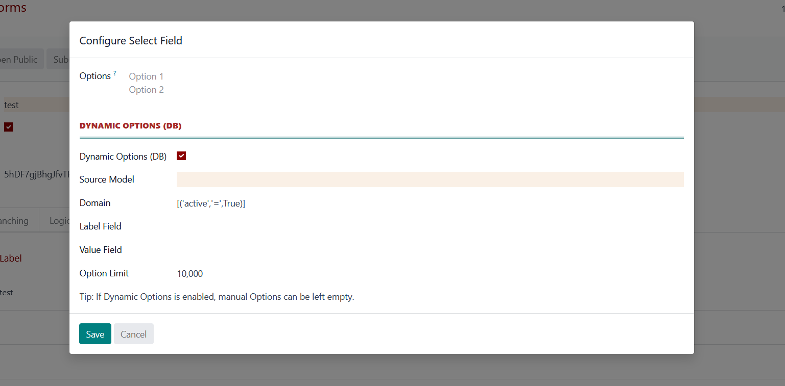
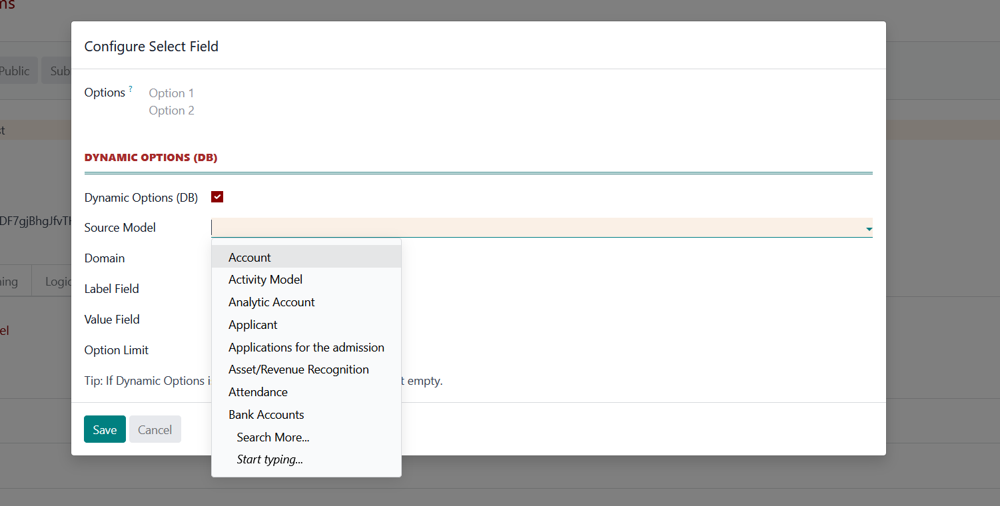
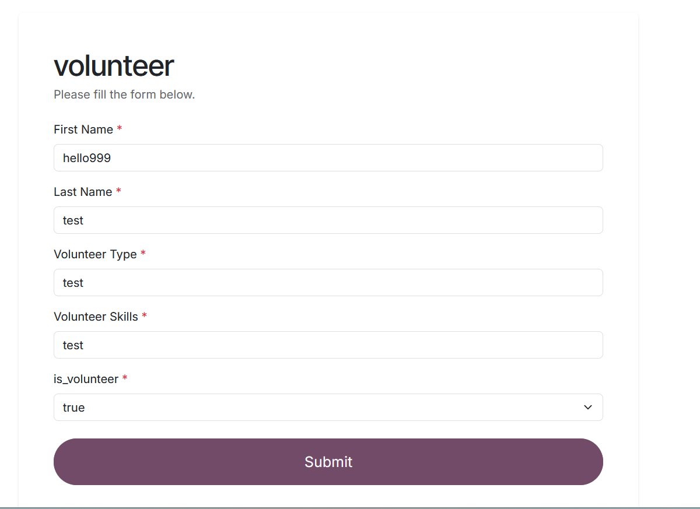
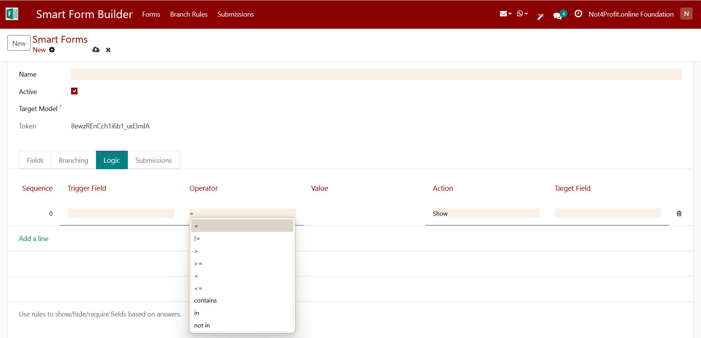
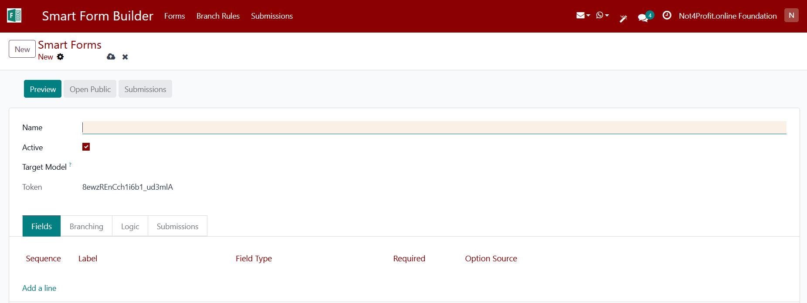
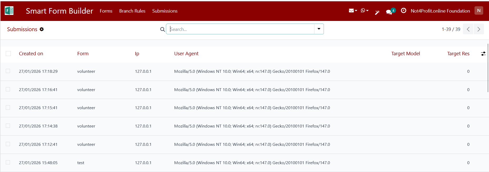
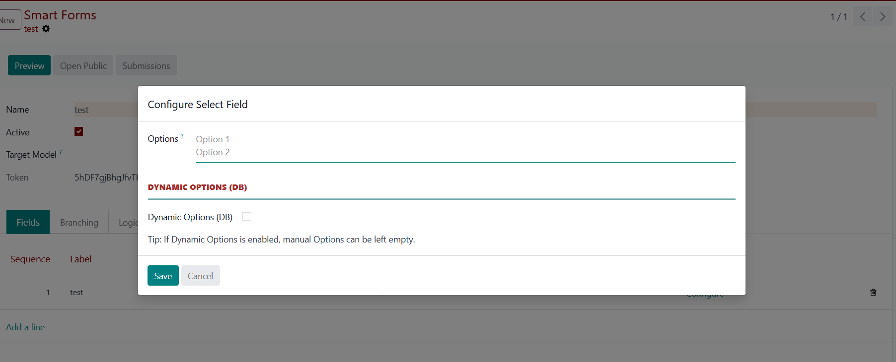
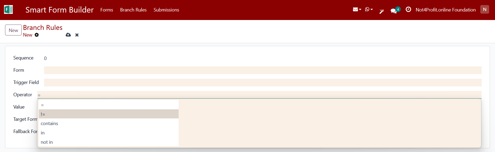

Design powerful, intelligent forms in Odoo with dynamic fields, smart logic, and seamless data integration.
Choose from multiple field types like text, select, radio, file upload, email, and more to design flexible forms.

Configure select fields with dynamic options sourced directly from Odoo database models.

Populate dropdown values automatically from any Odoo model using domains, labels, and value fields.

Build and manage forms with a clean, intuitive interface designed for non-technical users.

Control field order, labels, and required rules to guide users through structured data entry.

Apply conditional logic to dynamically show, hide, or require fields based on user input.

Use powerful operators like equals, contains, in, and not-in to create intelligent form behavior.

Preview forms instantly and share them publicly with secure, token-based URLs.

Track all form submissions with metadata like IP address, browser, and submission time.

Link form submissions to Odoo business objects such as Contacts for seamless data integration.

Design branching rules to route users to different flows or forms based on their answers.
